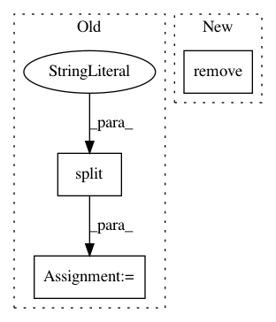

70a99a9759c8fb8d5731270639ebf95dd0e02a04,preprocess.py,,build_save_in_shards_using_shards_size,#Any#Any#Any#Any#Any#,49
Before Change
src_data = fsrc.readlines()
tgt_data = ftgt.readlines()
src_corpus = "".join(src_corpus.split(".")[:-1])
tgt_corpus = "".join(tgt_corpus.split(".")[:-1])
num_shards = int(len(src_data) / opt.shard_size)
for x in range(num_shards):
After Change
torch.save(dataset, pt_file)
ret_list.append(pt_file)
os.remove(src)
os.remove(tgt_list[index])
del dataset.examples
gc.collect()
del dataset
In pattern: SUPERPATTERN
Frequency: 3
Non-data size: 3
Instances
Project Name: OpenNMT/OpenNMT-py
Commit Name: 70a99a9759c8fb8d5731270639ebf95dd0e02a04
Time: 2018-10-11
Author: vince62s@yahoo.com
File Name: preprocess.py
Class Name:
Method Name: build_save_in_shards_using_shards_size
Project Name: Netflix/vmaf
Commit Name: 4b8fac0f31860b19efdda701920abc60991f2d1f
Time: 2020-11-12
Author: kswanson@netflix.com
File Name: python/vmaf/core/quality_runner.py
Class Name: VmafossExecQualityRunner
Method Name: _get_quality_scores
Project Name: bashtage/linearmodels
Commit Name: f373fff0861a23f1fb4a82a108cbd7817761083d
Time: 2017-03-24
Author: kevin.k.sheppard@gmail.com
File Name: linearmodels/panel/model.py
Class Name: PanelOLS
Method Name: from_formula